Primeros pasos
Ingresamos a nuestro modulo, y en el menú lateral izquierdo encontrará todas las opciones que podrá manipular en el modulo de preFacturacion en el aplicativo de Persey.
Guia visual :
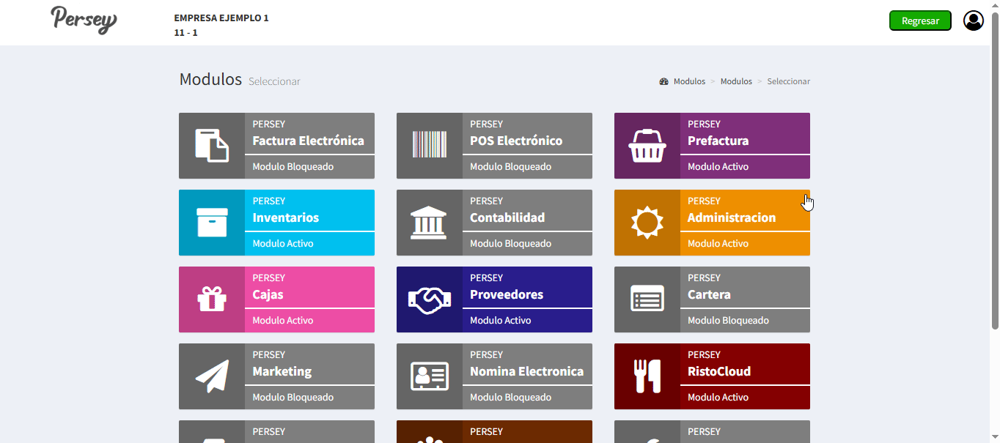

Ingresamos a nuestro modulo, y en el menú lateral izquierdo encontrará todas las opciones que podrá manipular en el modulo de preFacturacion en el aplicativo de Persey.
Aqui se podrá guiar paso a paso sobre como generar una prefactura, tambien aprenderá a visualizar y imprimirla en su impresora POS.
En esta sección se podrá crear prefacturas diligenciando un formulario con los datos correspondientes teniendo en cuenta la siguiente información en la imagen.
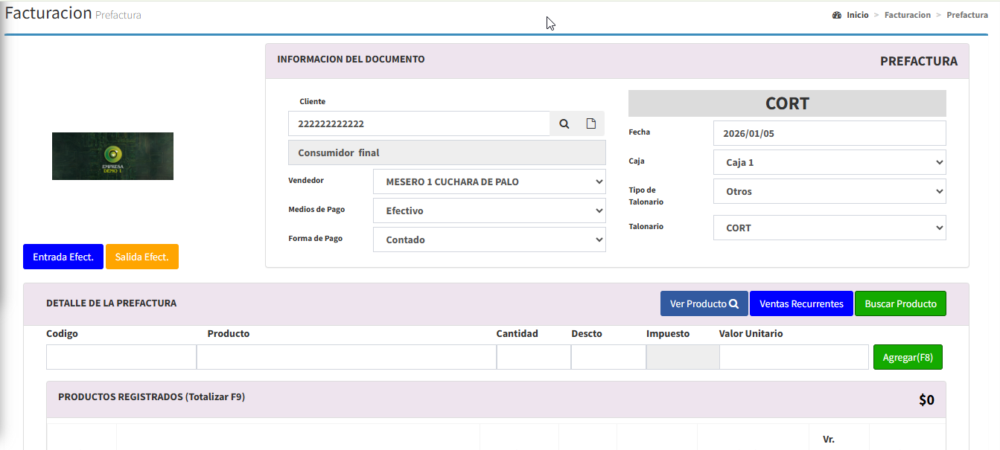Para la creación de una prefactura es trascendental tener un cliente creado con anterioridad. Si no tiene un cliente , por favor registre un nuevo tercero para dicha prefacturación; en caso de que ya tenga un cliente registrado, se ignora el Paso 1.
Para registrar un nuevo cliente lo puede hacer desde la misma ventana como se muestra en la siguiente imagen o dirigirse hacia el modulo de "Administracion en la sección de "Terceros".
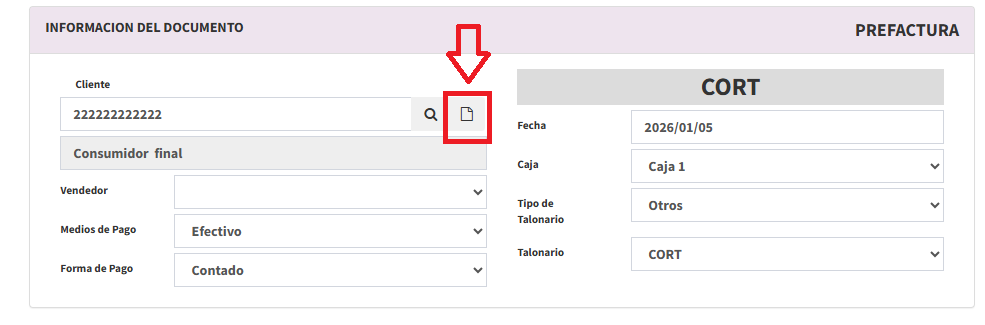Es importante que se diligencien los campos del formulario teniendo en cuenta, si es persona natural o persona juridica, posterior a eso click en el botón "Guardar" en la parte inferior.
Por favor, los campos que tengan un asterisco (*), se deben llenar obligatoriamente.
En caso de seleccionar "Persona Natural" se bloqueará el campo de "Razón Social".
A continuación, se mostrará la vista de como se bloquean los campos si selecciona "Persona Natural" y como diligenciar el formulario:
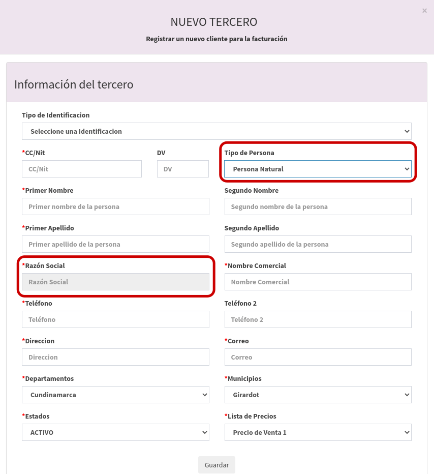
En caso de seleccionar "Persona Juridica" se bloquearán los campos de "Primer nombre de la persona", "Segundo nombre de la persona", "Primer apellido de la persona" y "Segundo apellido de la persona".
A continuación, se motrará la vista de como se bloquean los campos si selecciona "Persona Juridica" y como diligenciar el formulario:


Una vez llenado todos los campos, guardamos.
Ya que tenemos definido nuestro cliente, vamos a llenar todos los campos, aunque ya vienen predefinidos, podemos modificarlos. Así como se muestra A continuación:
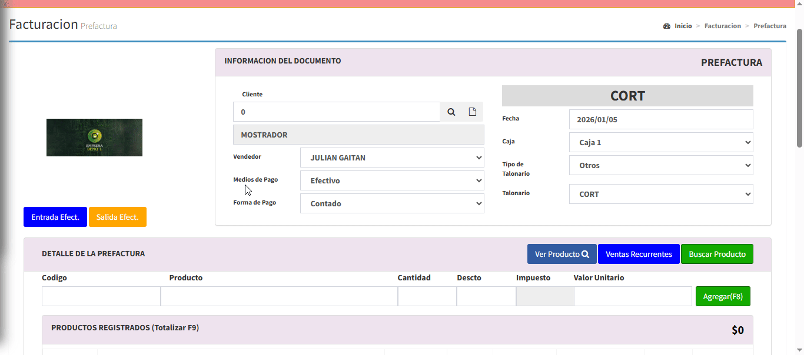Veamos mas a detalle los productos, en la opcion "Ver Producto" ahí podemos ver con el codigo, el nombre, los distintos precios que tiene de venta, la unidad de medida y existencias.
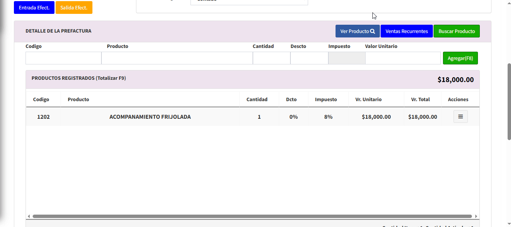Podemos editar el producto si se desea, agregando mas cantidad o modificando el precio:
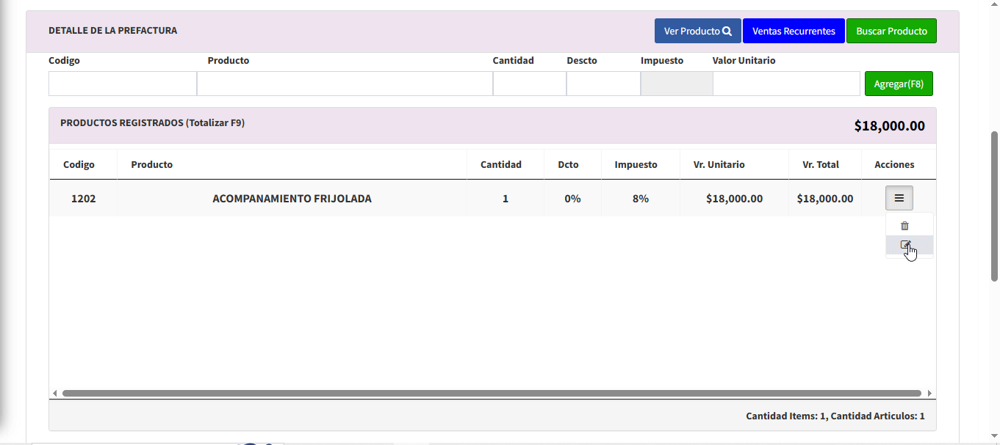Ahora Seleccionamos nuestro metodo de pago y guardamos o congelamos la prefactura, así:
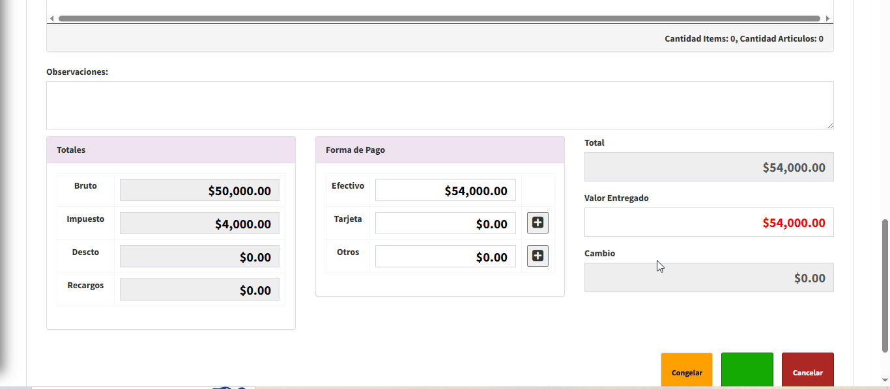Y de este modo creamos nuestra prefactura
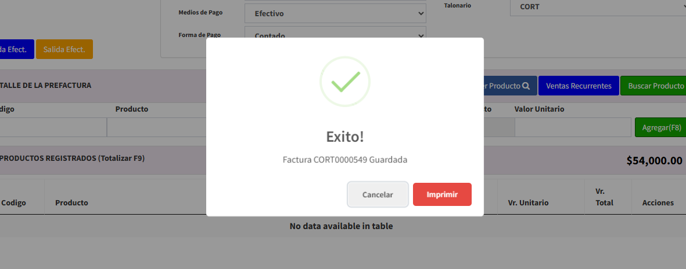En este apartado podemos obtener una vista mas dinamica de como hacer un prefactura de forma rapida, inicialmente pensada para los restaurante que utilizan tabletas:
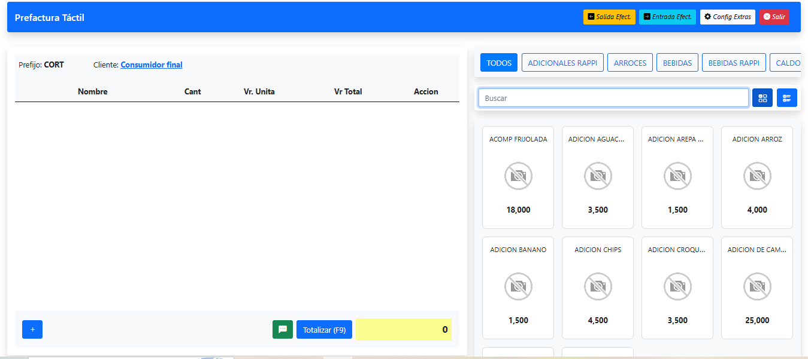Si nos situamos en la parte superior derecha de este lugar, podemos encontrar accesos direectos para hacer entrada y salida de efectivo, sin salirnos del tactil, ademas un boton de configuracion que ya lo veremos a detalle y la opcion de salir
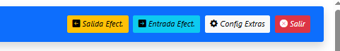Para llenar nuestra factura es muy facil, lo primero que tenemos que hacer es seleccionar el mesero que esta en la labor, (Esto lo hacemos en configuraciones extras), seguido de esto, seleccionamos todos los productos que queramos, le damos en totalizar para seleccionar un metodo de pago, seleccionamos el que se necesite y ya quedará guardada. Asi como veras en el siguiente video:
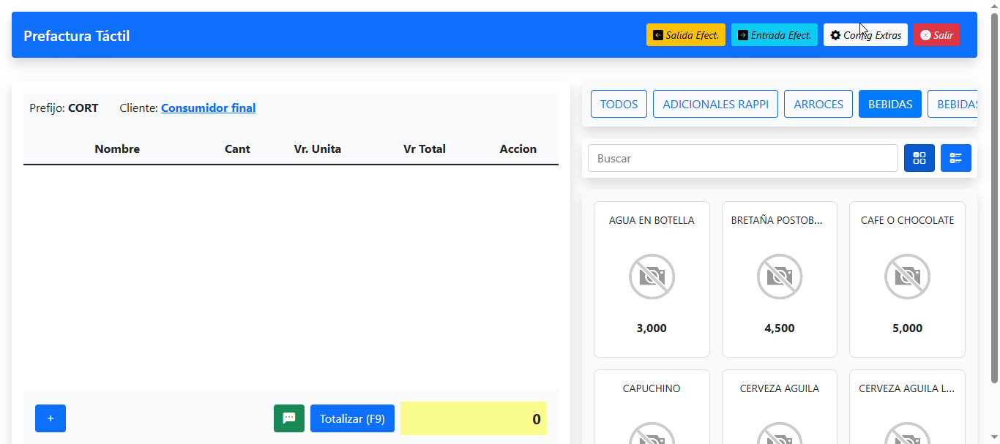En esta sección podrá visualizar todas las pre-facturas creadas, hacer una nota credito , duplicar la pre-factura e imprimir la factura desde una impresora POS
Para ello dirijase hacia la parte izquierda y dele click sobre la sección "Listar".
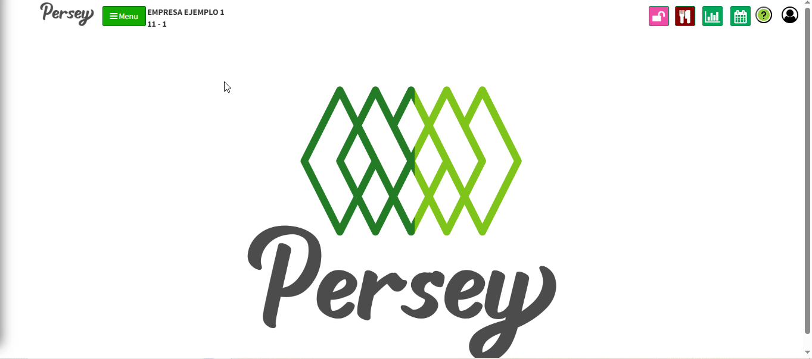Si desea visualizar la factura se debe dar click en "visualizar" en la lista de opciones de la factura.
Cuando visualice la factura le aparecerá de la siguiente manera:
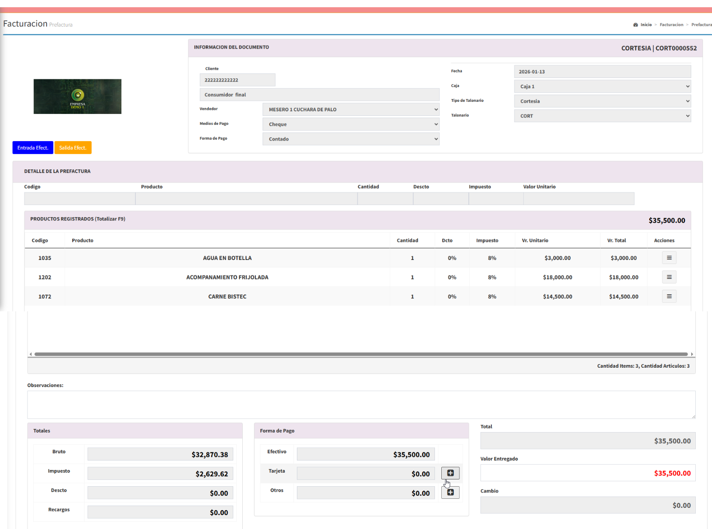Las notas credito son fundamentales para la anulación de una factura según sea el concepto. Si se desea hacer una nota credito, se tiene que ubicar sobre la factura a la cual le quiere realizar la configuración y darle click sobre la opción "Nota Credito". Hay que tener en cuenta que si la factura ya tiene una nota credito, la opción de ajuste no se mostrará
Primero, se debe seleccionar el concepto de nota credito. Si el concepto es "Anulación de factura electrónica" simplemente se procede a darle al botón "Guardar Nota" como se muestra en la siguiente imagen
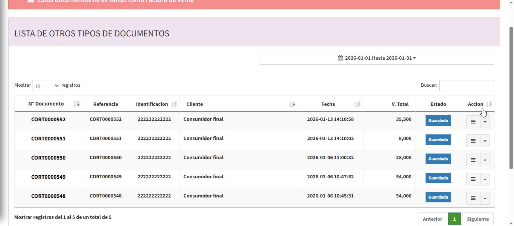Si por otro lado, el concepto de nota de credito, corresponde a esta opcion es trascendental realizar la acción que mas convenga por cada producto de la factura.
Usted podrá modificar, elminar o anadir recargos a los productos
Tambien se tendrá la opción de duplicar la factura si dado el caso, se repite una transacción con los mismos elementos implicados y cabe aclarar que como no es la misma factura, usted podrá añadir, eliminar o editar información de los productos.
Hay que recordad que, se pueden duplicar facturas mas no pueden duplicar nota creditos 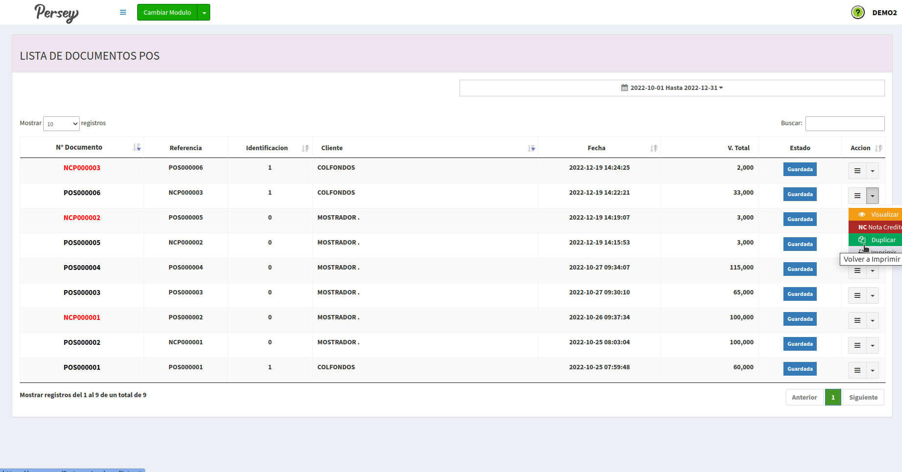Por último el software provee la opción de imprimir la factura desde una impresora POS o una impresora Bluetooth.
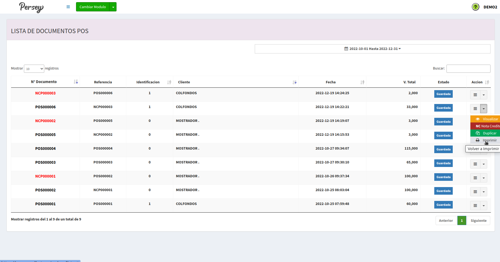En esta seccion se podrá visualizar todos los reportes por diferentes categorías como por periodos, por impuestos, por grupos y mas.
En esta seccion podrá visualizar todos los reportes por diferentes categorías como por periodos, por impuestos, por grupos y mas.
Para poder ver este reporte, se debe diligenciar el formulario, escoger el talonario, la fecha desde-hasta y darle click en el boton que dice "BUSCAR".
Seleccione otros filtros si desea ver el reporte detallado o sencillo y si lo quiere filtrar por clientes.
Tambien se puede descargar en PDF dandole click en el boton que dice "PDF". o en excel de la misma manera: 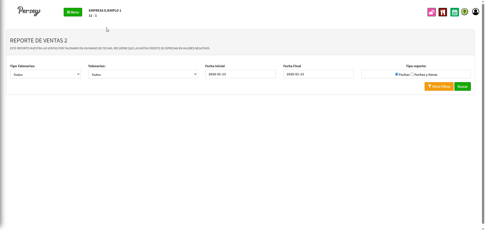
Para poder ver este reporte se debe diligenciar el formulario, escoger el talonario, la fecha desde-hasta y darle click en el boton que dice "VER". Tambien se puede decargar en PDF o Excel dando click en el boton "PDF" o "Excel".
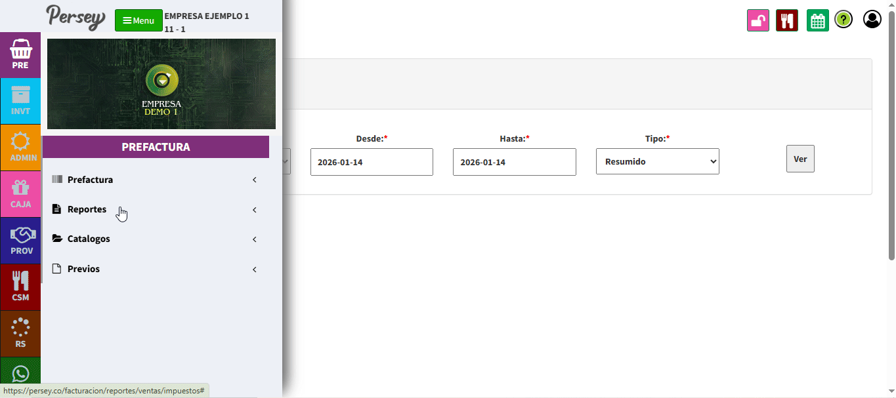Para poder ver este reporte se debe diligenciar el formulario, escoger el tipo y talonario, el grupo, la fecha desde-hasta y darle click en el boton que dice "VER". Tambien se puede decargar en PDF dando click en el boton "PDF" .
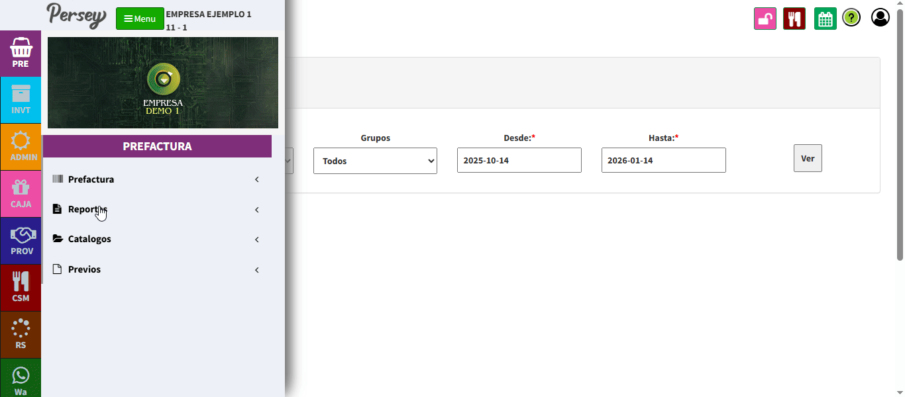Para poder ver este reporte se debe diligenciar el formulario, escoger el tipo y talonario, el vendedor y la fecha desde-hasta y darle click en el boton que dice "VER". Tambien se puede descargar en PDF dandole click en el boton que dice "PDF".
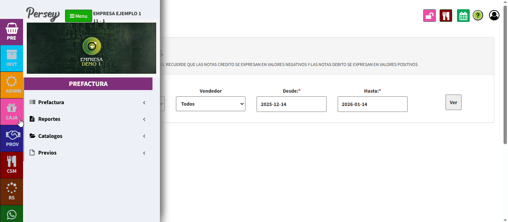Para ver este reporte se debe diligenciar el formulario, escoger el talonario, tipo de talonario, articulos. la fecha desde-hasta y si se requiere un reporte detallado o resumido, seleccione si prefiere un reporte detallado o resumido, luego darle click en el boton que dice "VER". Puede filtrar los reportes dependiendo si se requiere por articulos, cliente y fecha. Tambien se puede descargar en PDF dandole click en el boton que dice "PDF".
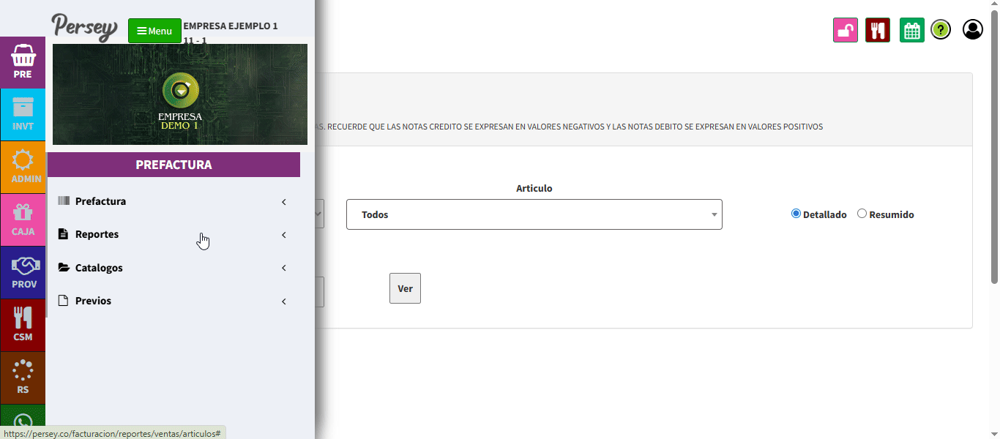Para ver este reporte se debe diligenciar el formulario, escoger tipo de nota, la fecha desde-hasta y luego darle click en el boton que dice "VER". Tambien puede descargar el reporte en PDF dando click en el boton "PDF".
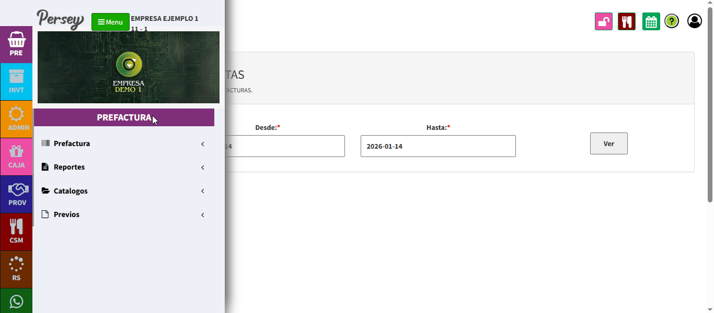Para ver este reporte se debe diligenciar el formulario, escoger el talonario, clientes, la fecha desde-hasta y darle click en el boton que dice "VER". Tambien se puede descargar en PDF dandole click en el boton que dice "PDF"
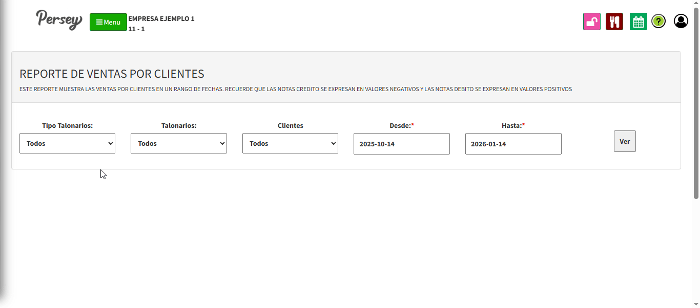Para ver este reporte debe diligenciar el formulario , escoger el talonario, el vendedor, la fecha desde-hasta y si quiere un reporte detallado o resumido, luego darle click en el boton que dice "VER". Tambien puede descargarlo en PDF dandole click en el boton que dice "PDF"
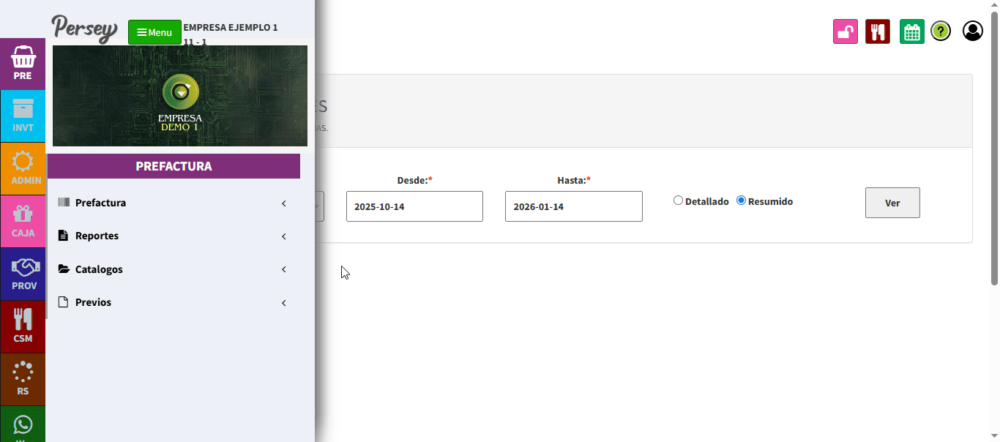Para ver este reporte debe diligenciar el formulario , escoger el talonario, el articulo, la fecha desde-hasta y si quiere un reporte detallado o resumiodo luego darle click en el boton que dice "VER". Tambien puede descargarlo en PDF dandole click en el boton que dice "PDF"
Para ver el reporte de información exogena de venta solo debe seleccionar el año y darle click en el boton que dice "VER", Tambien puede descargarlo en formato Excel dandole click en el boton "Excel", en visibilidad podemos agregar o quitar items que se reflejan en las columnas del informe.
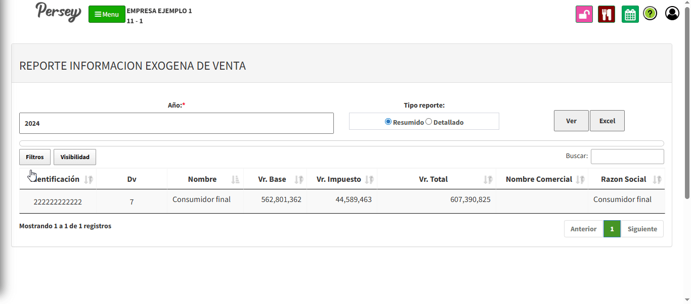Este comprobante nos sirve para ver el reporte de las ventas hechas por dia, para esto, seleccionamos nuestro talonario, el rango de inicio y final de la fecha, y si queremos que el resumen sea tipo Dian o detallado
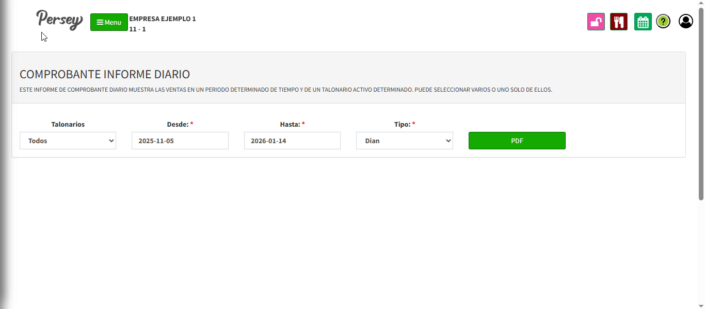Este comprobante nos sirve para ver el reporte de las ventas hechas por dia, para esto, seleccionamos nuestro talonario, el rango de inicio y final de la fecha, y si queremos que el resumen sea tipo Dian o detallado
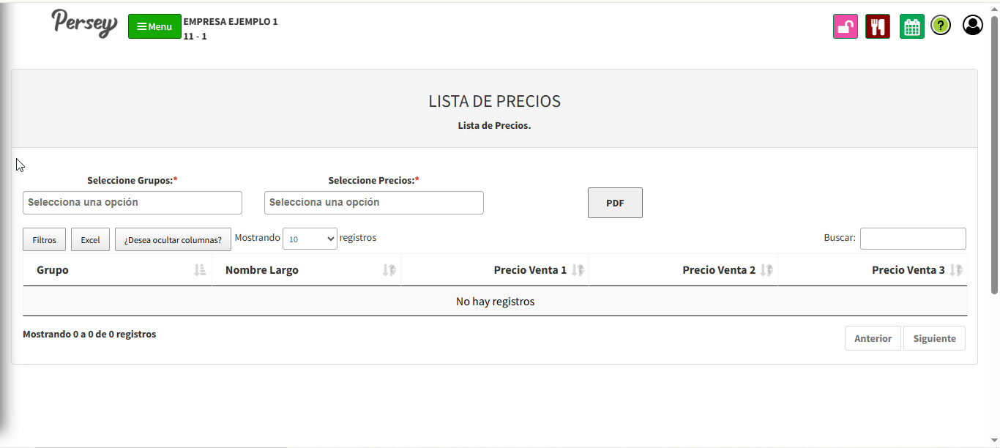Aqui podremos crear un resumen detallado de cuanto fueron los valores ingresados, segun cada metodo de pago registrado. Seleccionamos el tipo de talonario y talonario, el rango de fechas y si queremos ver el informe detallado o resumido. Como siempre podremos decargarlo en PDF
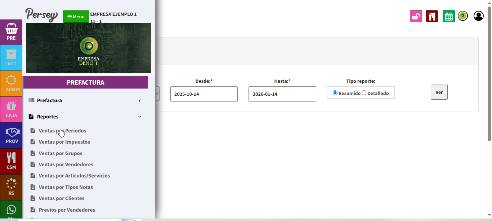Este reporte muestra las comisiones de los vendedores por las ventas realizadas en un período. Las devoluciones aparecen como valores negativos. Seleccionamos vendedor, rango de fechas y si sea un informe resumido o detallado.

En esta seccion se podrá visualizar todos los terceros y metodos de pagos que tiene registrados, tambien podrá editarlos, eliminarlos y agregar nuevos
Podremos agregar,editar o eliminar formas de pago para relacionarlas en las facturas y prefacturas:
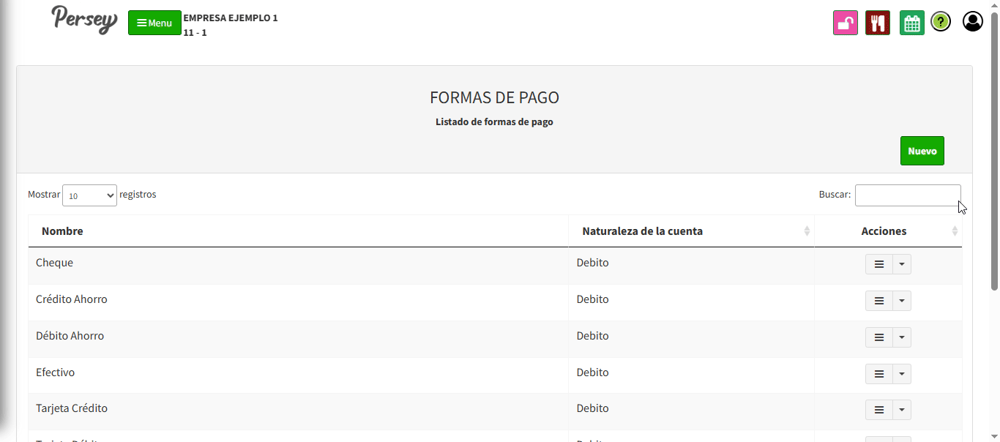Es de vital relevancia conocer que un tercero puede ser un cliente o un proveedor. Le aparecerán todos los terceros que tenga en una lista, los terceros se pueden modificar dando click en el boton amarillo y crear uno nuevo dando click en el boton que dice "NUEVO"
No se puede eliminar un tecero si ya esta relacionado en una factura.
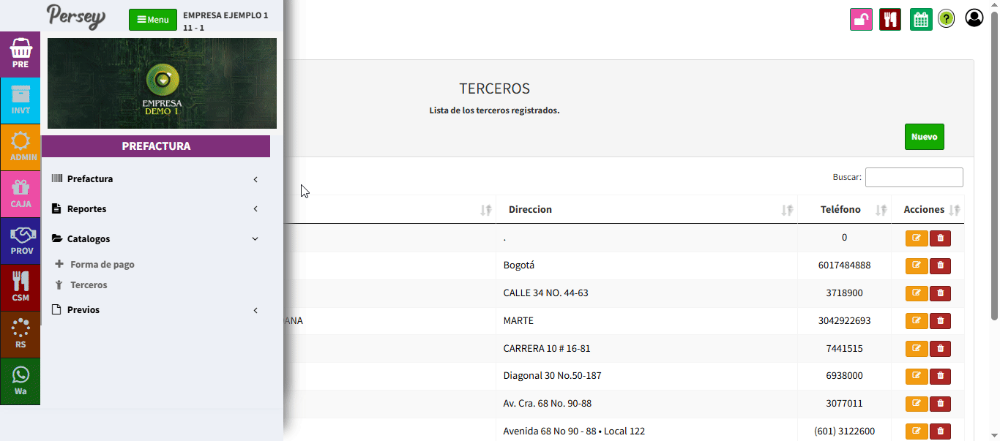Por favor, los campos que tengan un asterisco (*), se deben llenar obligatoriamente.
Razón Social y Nombre Comercial: Tenga en cuenta que la razón social y el nombre comercial pueden ser diferentes dependiendo de la información de la empresa
Lista de Precios: Tenga en cuenta que la lista de precios es dependiente de la configuración de precios que asigno a los articulos y sus listas.
En caso de seleccionar "Persona Natural" se bloqueará el campo de "Razón Social".
A continuación, se mostrará la vista de como se bloquean los campos si selecciona "Persona Natural" y como diligenciar el ormulario:
En caso de seleccionar "Persona Juridica" se bloquearán los campos de "Primer nombre de la persona", "Segundo nombre de la persona", "Primer apellido de la persona" y "Segundo apellido de la persona".
A continuación, se motrará la vista de como se bloquean los campos si selecciona "Persona Juridica" y como diligenciar el formulario:
Por ultimo, se ilustrará como crear un cliente:

En esta seccion se podrá registrar una prefactura y tambien podrá visualizar todas las prefacturas que ha registrado
Para crear un nuevo previo se debe escoger o crear el cliente(tercero). Buscar los productos que desea añadir a su prefactura y darle guardar
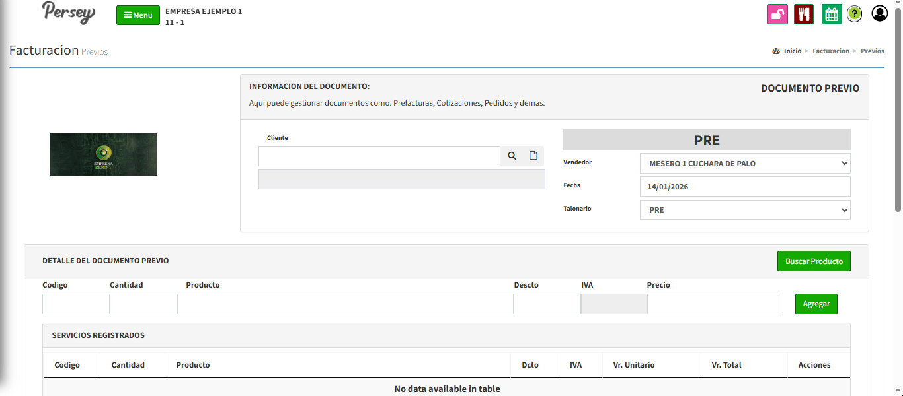Aqui apareceran todos los previos o prefacturas que haya generado y sus respectivas opciones
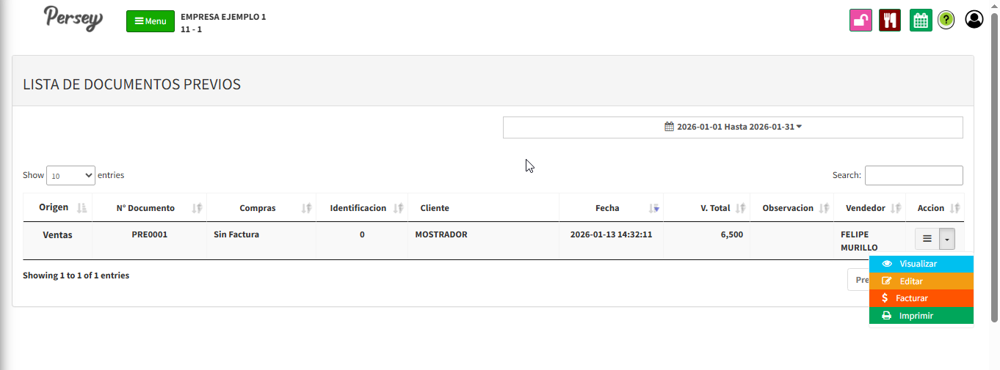Podremos modificar sus productos o cambiar el cliente de este previo
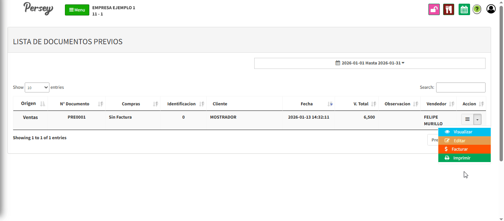Aca convertiremos nuestro previo en una factura
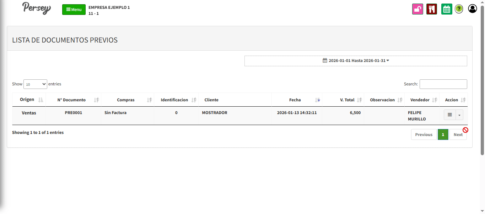